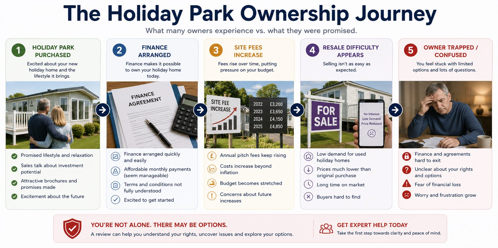

Plain-English summary: Holiday park site fee disputes can involve annual pitch fees, service charges, utilities, administration fees, maintenance costs and unexpected increases. This guide explains how to organise the fee evidence carefully.
This is an informational guide. The main review page remains Holiday Park and Static Caravan Review if you want Quaerens to look at your documents and circumstances.
Key issues and warning signs
- Annual site fee increases
- Unexpected service or administration charges
- Utility and maintenance costs
- Lack of explanation for increases
- Services not provided or reduced
- Late payment charges and arrears

Detailed explanation
A fee increase is not automatically unfair. The first step is to compare the increase with the agreement, previous invoices, notice requirements and the explanation provided by the park.
A simple table of yearly charges can be very helpful. Include the date, amount, reason given, documents received and whether you challenged the charge.
If fees were discussed before purchase, keep those sales documents separate from later invoices. This helps show whether running costs were clearly explained.
These issues often overlap with broader holiday park dispute review concerns, but this guide focuses on the specific topic so it does not duplicate the main commercial page.
Common examples
Example 1
A buyer was shown one expected annual cost before purchase but received a significantly higher fee schedule later.
Example 2
A park introduced additional administration and maintenance charges without a clear breakdown.
These are illustrative fact patterns only. They do not describe guaranteed outcomes or imply that every similar case has a valid complaint.
Evidence checklist
Having these documents available can make the review clearer. You do not need every document before contacting us.
- Licence agreement
- Previous fee schedules
- Annual invoices and increase notices
- Utility statements
- Service charge explanations
- Payment records
- Complaint emails and replies
- Sales material discussing running costs
Practical steps you can take
- Create a year-by-year fee table.
- Ask for an itemised explanation of new charges.
- Keep copies of payment records.
- Separate affordability concerns from service-quality complaints.
- Record any missing or reduced services.
What may weaken the position?
- No invoices or payment records
- Only objecting after arrears have built up
- Ignoring clear fee-review clauses
- Assuming every increase is automatically improper
What Quaerens can review
Quaerens can review site fee schedules, contract terms, invoices, payment records and correspondence to help clarify whether the evidence supports a complaint route.
What Happens Next?
Submit your summary
You submit a summary of the issue and any documents already available.
We review the evidence
We review the purchase, contract, correspondence and evidence.
We discuss gaps
We contact you to discuss the circumstances and any information gaps.
We explain routes
We explain the complaint or support routes that may be worth considering based on the available information.
Frequently asked questions
Can a holiday park increase site fees?
Many agreements allow increases, but the wording, notice, explanation and context matter. An increase is not automatically unfair.
What if services were reduced but fees increased?
Keep evidence of the service change, photographs if relevant, notices from the park and fee explanations.
Should I withhold payment?
Be careful. Non-payment can create arrears or enforcement issues. Consider organising the documents and taking advice before deciding what to do.
Can old invoices help?
Yes. Older invoices can show the pattern of increases and whether a later change is unusual.
Are utility charges relevant?
They can be, especially where the calculation, metering, administration or explanation is unclear.
Does Quaerens guarantee a fee reduction?
No. Quaerens can review evidence and possible complaint routes, but no outcome is guaranteed.
Related guides
Holiday Park Exit Problems
Guidance on holiday park exit problems, notice requirements, removal costs, resale restrictions, buyback concerns and evidence to review before leaving.
Holiday Park Misrepresentation
Plain-English guidance on holiday park misrepresentation, static caravan sales promises, income claims, resale value, site fees and evidence to keep.
Holiday Park Resale Problems
Guidance on static caravan resale problems, low buyback offers, park resale restrictions, commission, depreciation and evidence from the original sale.
Holiday Lodge Purchase Disputes
Guidance on holiday lodge purchase disputes, sales promises, occupancy restrictions, finance, defects, delayed handover, resale and exit evidence.
Holiday Park Knowledge Hub
Browse the full set of static caravan and holiday lodge guidance.
Main Holiday Park Review
Use the main page for a full document and circumstances review.
Request My Free Holiday Park Review
Send a short summary of what happened and the documents you have. Quaerens will explain whether structured review support appears appropriate.
Request My Free Holiday Park ReviewImportant note
This guide is general information for document organisation and complaint preparation. It does not promise compensation, a refund, contract cancellation or any specific outcome. The available routes depend on the agreement, evidence, dates, parties involved and individual circumstances.